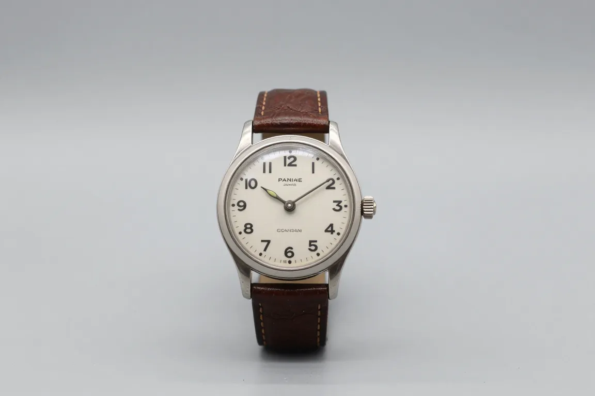

мода · 1904–1930 · также: Браслетные часы, Окопные часы, Ранние наручные часы Santos
Маленькие часы на кожаном ремешке, вытеснившие карманные между 1904 годом и 1920-ми. Корпус 28–35 мм с проволочными ушками, белый эмалевый циферблат и светящиеся цифры. В окопной версии стекло закрывает проволочная решётка.

Главная идея
Время должно быть на запястье, где лётчик, солдат или водитель прочтёт его одним взглядом, не освобождая руку.
Принципы дизайна
Делайте корпус шириной 28–35 мм, чтобы он помещался под манжетой и на тонком запястье.
Крепите ремешок к корпусу проволочными или неподвижными ушками, чтобы ремешок не соскальзывал.
Печатайте крупные арабские цифры на белом эмалевом циферблате, чтобы время читалось на движущемся запястье.
Покрывайте цифры и стрелки светящейся краской, чтобы циферблат был виден в темноте.
Закрывайте стекло полевой модели проволочной решёткой, принимающей удар.
Герметизируйте корпус резьбовой задней крышкой и резьбовым безелем, чтобы не проникали пот и пыль.
Ставьте маленький механизм шириной 25–29 мм и толщиной не более 8 мм.
Режьте длинный узкий ремешок из телячьей кожи с простой штифтовой пряжкой.
Антипаттерны
Корпус карманных часов с кольцом, надетый на ремешок
Большой нарядный циферблат, застревающий под манжетой
Гравированная крышка, закрывающая циферблат
Толстый выпуклый корпус, цепляющийся за ткань
Мелкие цифры, расплывающиеся на движущемся запястье